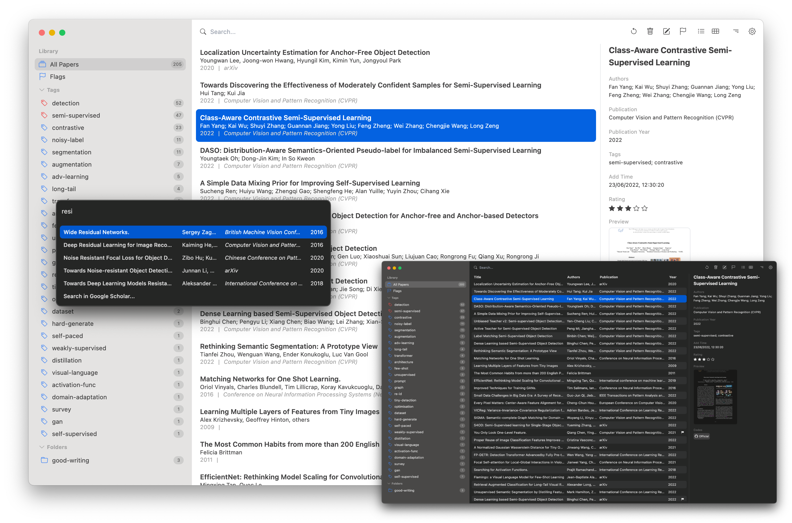

Paperlib, to organise academic papers decently
An open-source and simple academic paper management tool.
Screenshot

Scrape paper’s metadata and code repository from arXiv, doi.org, DBLP, IEEE, openreview.net, Google Scholar, and PaperwithCode. Especially tailored for computer science. Also support custom scraper.
Scrape Metadata
Flag, tag, and create folders to let your library clean and tidy. Also support markdown and plain text notes
Organise your Paper
Export papers to Bibtex format with the fast-export plugin window when you write your paper draft.
Export Bibtex
General search, advanced search, and full-text search.
Three Search Modes
Subscribe to RSS feed to get new papers.
RSS Feed
Supports macOS and windows. Access your library from everywhere with a sync database supported by MongoDB atlas.
Cross Platform and Cloud Sync
WE WANT TO THANK YOU
Donate.
WE WANT TO THANK YOU
Sponsors.